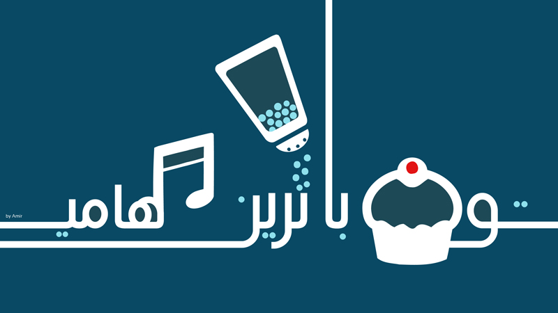
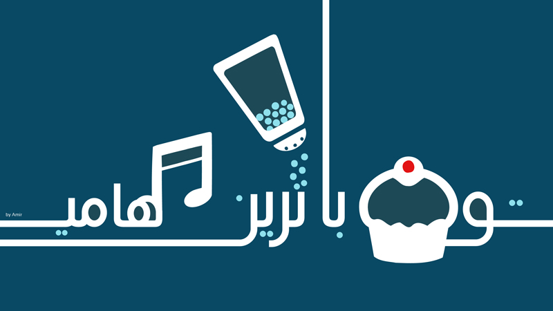

امیر مومنیان
این صفحه رزومه بنده میباشد. به برنامهنویسی به شدت علاقهمندم و در اوقات بیکاری موزیک میسازم و با نرمافزار، طراحی میکنم.
| تاریخ تولد | ۵ مهر ۱۳۷۱ |
| وضعیت نظام وظیفه | کارت معافیت از خدمت |
| وضعیت تاهل | مجرد |
| شماره تماس | ۰۹۳۶۵۵۸۶۰۱۵ |
| ایمیل | Nainemom@Gmail.com |
 
